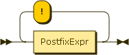

Prev
Next
8.4.7. Map operator

Figure 8.25. SimpleMapExpr
Figure 8.26. ContextItemExpr
JSONiq provides a shortcut for a for-return construct, automatically binding each item in the left-hand-side sequence to the context item.
Example 8.72. A simple map
(1 to 10) ! ($$ * 2)
Result:
2 4 6 8 10 12 14 16 18 20
Example 8.73. An equivalent query
for $i in 1 to 10 return $i * 2
Result:
2 4 6 8 10 12 14 16 18 20
Prev
8.4.6. Count clauses
Up
Home
Next
8.4.8. Composing FLWOR expressions